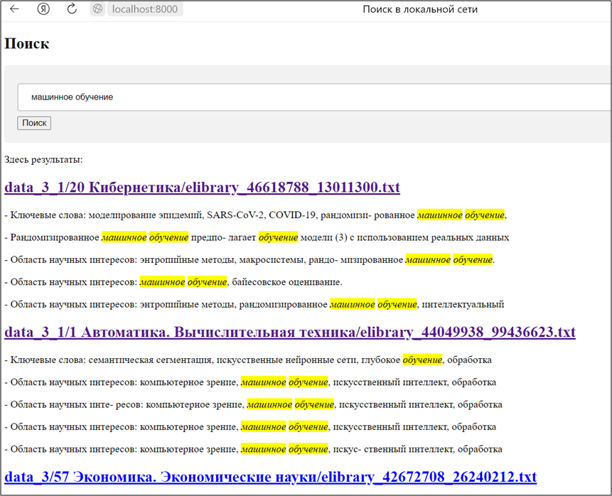

Поисковый сервис для локальной сети предприятия (Версия - 6)
Сканирует в постоянном режиме папку с файлами и сохраняет в базе для полнотекстового поиска.
Предоставляет интерфейс как в любом поисковике в интернет. В поисковой строке можно вводить запросы.
Под поисковой строкой располагаются результаты полнотекстового поиска.
По гиперссылкам файлы выкачиваются на компьютер пользователя.

Код сервиса и детальное описание по ссылке https://github.com/prog815/LS6.
Установка
Для установки скачайте файлы проекта себе по ссылке https://disk.yandex.ru/d/vo_4n6md6qlzGQ
Перейдите в каталог со скачанными файлами и действуйте по инструкции в файле instruct.txt